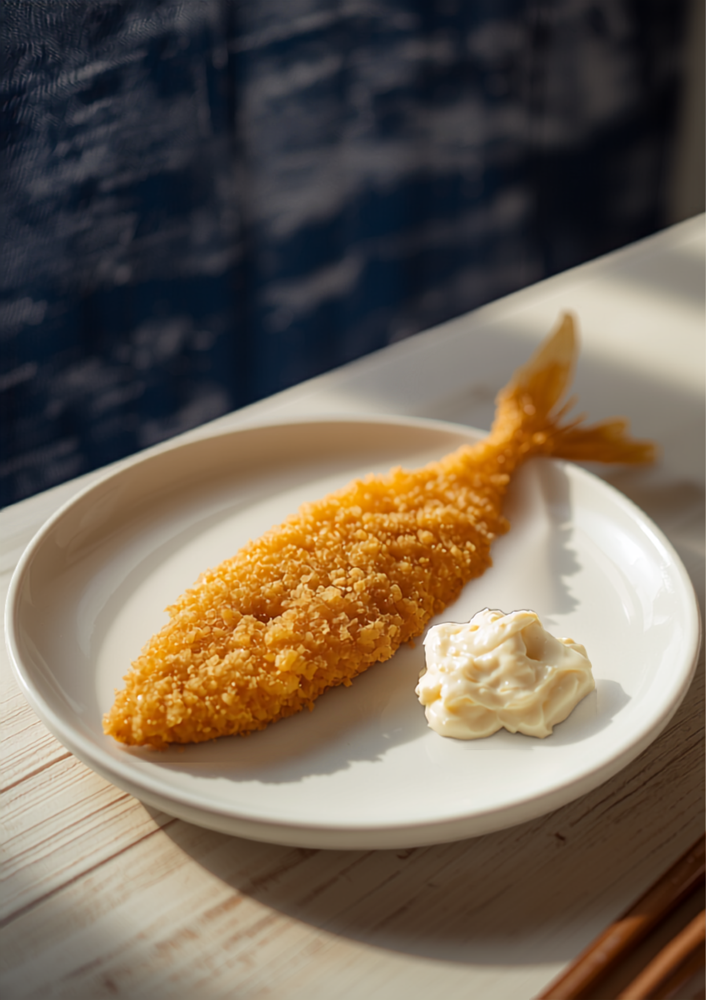
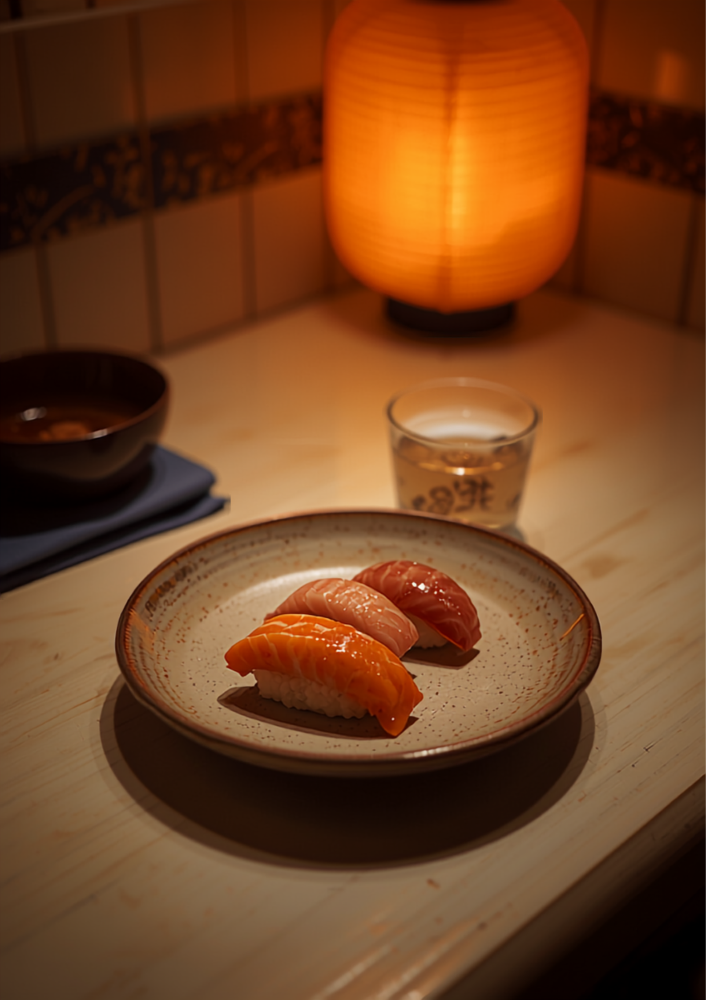

西新・祖原の小箱居酒屋
店主が「このお魚、旬です」と席まで持ってきます。刺身にするか、半生のフライにするか、握りにするか。そこから相談が始まる、カウンター中心の小さなお店です。
今夜の席を電話で聞く
プロの職人が、同じ魚を2〜3の食べ方に仕立てます。
まずは鮮度をそのまま。「お魚どれも美味しかった」の声はここから生まれます。
生で食べられる鮮度だから、半生に揚げられる。外ザクッ、中ふんわり。自家製タルタルをたっぷりと。
〆は小ぶりの握りを一貫から。「握りも小ぶりに握ってくれてジャスト！」
お酒も、選ぶ楽しさを小さく。日本酒も焼酎も飲み切りサイズで頼めるので、一尾の魚に合わせて少しずつ変えていけます。
「生で食べれる鮮度抜群のアジだから半生に揚げて外はザクッと中はふんわり！自家製のタルタルをたっぷり掛けて頂くと昇天する旨さ！」
Googleの口コミより
タルタルが旨すぎて「カレイのフライにも付けて食べた」という人まで現れる名物です。まず一皿、だまされたと思ってどうぞ。

「天神のいい感じのお魚食べるんだったら、ここにきた方がいいです。」
Googleの口コミより
「まずコスパ最高。料理は全部最高に美味い。プロ職人の料理の数々を堪能させて頂きます。」
Googleの口コミより
「大ベテランの方がされてると思ってたら若い方だったのが印象的。落ち着いた接客で良かったです。」
Googleの口コミより
「店員さんがとってもとっても温かみがあって良いんです。何を注文しても外さない。」
Googleの口コミより
「他のお店がやってない時間（朝まで）にやってるのは有難いです。」
Googleの口コミより